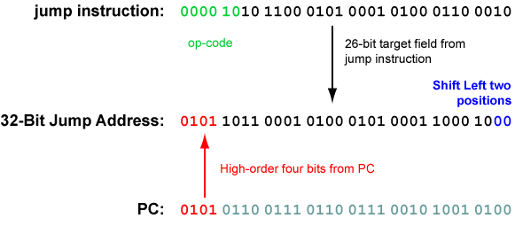

| PC at top of cycle | Instruction (details omitted) | PC just after this instruction has executed (at the bottom of the cycle) |
|---|---|---|
| ............... | ........... | 00450000 |
| 00450000 | load | 00450004 |
| 00450004 | load | 00450008 |
| 00450008 | add | 0045000C |
| 0045000C | store | 00450010 |
| 00450010 | jump 0x00450000 | 00450014 |
| 00450014 | no-op | 00450000 |
In our schematic programs, the "jump" instruction loaded the PC with a 32-bit address after a one-machine-cycle delay.
How does a 32-bit instruction specify a 32-bit address? Some of the instruction's bits must be used for the op-code. Here is the assembly language form of the jump instruction.
j target # after a delay of one machine cycle,
# PC ← address of target
Here is the machine language form of the instruction:
6 26
000010 00000000000000000000000000 -- fields of the instructuion
opcode target -- meaning of the fields
There is room in the instruction for 26-bits of the address. The 26-bit target address field is transformed into a 32-bit address. This is done at run-time, as the jump instruction is executed.
Instructions always start on an address that is a multiple of four (they are word-aligned). So the low order two bits of a 32-bit instruction address are always "00". Shifting the 26-bit target left two places results in a 28-bit word-aligned address (the low-order two bits become "00".)
After the shift, we need to fill in the high-order four bits of the address. These four bits come from the high-order four bits in the PC. These are concatenated to the high-order end of the 28-bit address to form a 32-bit address.
For example, here is the machine language for the
instruction that jumps to location 0x5B145188.
Say that the instruction is located at
address 0x56767250.
|  |
While this is going on, what address is in the PC?